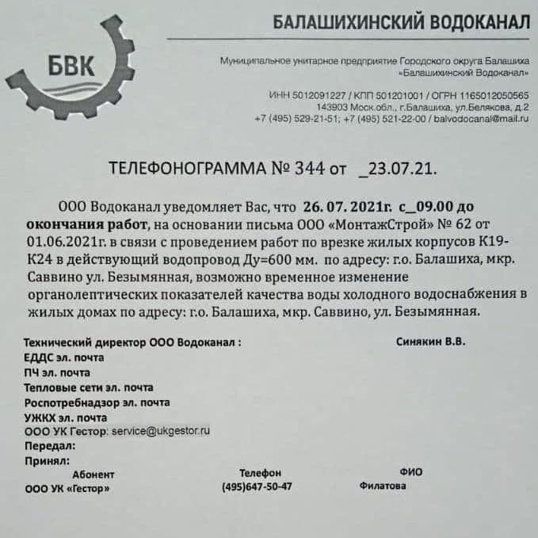

Новости
27 июля 2021
‼️📣 ВНИМАНИЕ
Собственникам помещений: 265, 266, 267, 371, 385, 390, 391 и 393 - 27 и 28 июля
с 9:00 до 12:00 вам необходимо обеспечить доступ в свои помещения специалистам
для диагностики и устранения неисправностей системы Автоматической пожарной
сигнализации (АПС).
Контактный телефон для связи: 89104359473 - Денис Павлович.
Контактный телефон для связи: 89104359473 - Денис Павлович.

24 июля 2021
‼️📣 ВНИМАНИЕ!!!
26 июля с 9:00 до окончания работ, возможно временное изменение
органолептических показателей качества воды холодного водоснабжения в нашем
доме.
18 июля 2021
НАПОМИНАЕМ ОБ ОТКЛЮЧЕНИИ ГВС
В период с 19.07.2021 по 02.08.2021 будет приостановлена подача ГВС в нашем
доме.